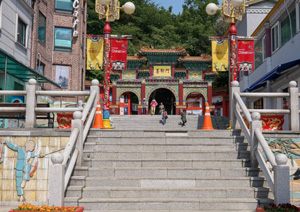
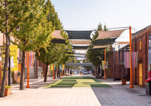

HOME > 즐길거리 > 주변시설
주변시설
-
- 우리나라 최초의 갑문으로 항구문화를 느낄 수 있는 인천항 갑문
- 인천항 갑문은 해발 102m의 월미산과 소월미도 사이에 위치하고 있으며,
우리나라 최초의 갑문이자 각종 무역선이 들어오는 곳으로 무역의 중심역할을 하던 공간입니다. - 갑문개방행사 기간중에 가족과 함께 인천항 갑문을 방문하면 바다 전경은 물론, 갑문식 도크를 통하여
대형화물선 및 여객선 등이 입출항하는 모습을 가까이서 지켜 볼 수 있습니다.
갑문관리소 상황실에서 인청항을 소개하는 멀티비젼을 볼 수 있어 교육적 효과까지 누릴 수 있습니다. - 대상 : 15인 이상 40인 이하의 항만관련자 및 유관 업·단체만 신청가능
일시 : 평일 10:00~17:00 (토,일,공휴일 제외)
견학 시간 : 평일 09:00~17:00(토,일,공휴일 제외) / 갑문운영팀 견학담당자:032-770-4519 - ※갑문 견학을 원하는 날로 부터 최소 일주일 전에 신청을 완료하여야 견학이 가능하며,
견학 신청이 중복 될 경우 조정될 수 있습니다.
※학교 등 인원이 많은 단체는 안전사고 및 보세구역으로 인해 갑문견학만 가능합니다.
※항만견학시에는 인천항만공사를 방문하여 안내자를 동승해야 견학이 이루어집니다. - 위치 : 인청광역시 중구 월미로 376 (북성동1가)
문의/안내 : 032-770-4519 (갑문운영사무소)
-
- 국내 최고의 호화 유람선에서 인천앞바다의 멋진 추억을월미도 유람선
- 월미도 유람선 코스모스호는 정서진 아라뱃길과 이어지는 서해바다와 영종대교를 항해하는 해양관광 유람선 입니다.
코스모스 호에서 만나는 낙조는 가히 장관입니다. - 선상공연을 감상할 수 있는 대공연당, 최대 200명까지 모임 및 연회 행사를 진행할 수 있는 최대규모
유람선에서 사랑하는 사람들과 잊을 수 없는 추억을 만들어 보세요! - 위치 : 인천 중구 북성동 2가 코스모스 유람선
문의/안내 : 032-764-1171 (코스모스 유람선)
-
- 인천 앞바다가 보이는 곳에서의 최고의 즐거움을 느낄 수 있는마이랜드
- 자연풍광이 뛰어난 월미도에서 마이랜드는 1992년 9월 개장한이래 지금까지
많은 사람들에게 사랑을 받아오고 있습니다. - 특히 타가다디스코과 월미도 바이킹은 차원이 다른 스릴과 재미로 연인, 가족, 친구들에게
인기가 많아 함께 즐길 수 있도록 준비되어 있고, 프로그램과 광고 촬영지로 전국적인 유명세를 떨치고 있습니다. - 월미도 마이랜드는 수도권과 가까운 위치에 있어 평일, 주말에 스트레스를 풀고자 많은 손님들이 방문하는 월미도의
놀이동산입니다. 방송출연 DJ들의 거침없는 입담으로 흥을 잔뜩 돋구워 더욱 재미있는 타가다디스코와
직각에 가까운 스릴 넘치는 바이킹은 이곳의 명물!
놀이기구를 타는 사람들 뿐만 아니라 구경하는 이들도 얼굴에 함박웃음을 머금고 있습니다. - 위치 : 인천광역시 중구 북성동 1가 98-334번지
문의/안내 : 032-765-2490 (마이랜드 놀이동산)
이용시간 : 오전 10:00 ~ 오후 24: 00
단체예약문의 : 070-8801-8525
-
- 꿈과 낭만이 가득한 거리 월미문화의 거리
- 1989년 7월 조성된 월미도 문화의 거리는 문화예술의 장, 만남과 교환의 장으로 알려지기 시작한
인천하면 떠올릴 만큼 유명한 곳으로 자리잡고 있습니다. - 휴일엔 각지에서 수십만명의 인파가 찾는 곳으로 카페, 놀이공원 회센터 등이 조화를 이루며 늘어서 있는
시원한 바다를 바라보며 구미에 맞는 음식을 골라 즐길 수 있는 절음과 낭만이 살아 숨쉬는 관광 명소입니다. - 문화의 거리는 관광객을 위하여 야외무대에서 각종 공연이 펼쳐지며, 시민문화 의식의 고취와
지방 예술 문화창달에 기여하고 있습니다. - 위치 : 인천광역시 중구 월미로 252 (북성도 1가)
문의/안내 : 032-765-4169 (월미도 관광안내소)
-
- 화교인들이 직접 만든 정통중화요리를 맛볼 수 있는 인천 차이나타운
- 인천 차이나타운은 1883년 인천항이 개항되고 중국인들이 모여 살면서
중국의 독특한 문화가 형성된 차이나타운과 그 주변지역은 개항기의 이국적인 문화를 접할 수 있는
인천의 중요한 문화와 관광자원입니다.
화교인들이 직접 만든 다양한 정통 중국요리를 맛 볼 수 있는 인천 차이나타운입니다. - 차이나타운에서 색다른 분위기를 물씬 풍기는 중국전통의상'치파오', '공갈빵' 등
다양한 물품을 보는 재미를 느껴보실 수 있습니다. - 위치 : 인천광역시 중구 북성동 1가 98-334번지
문의/안내 : 032-765-2490 (마이랜드 놀이동산)
 -
- 100여년의 한인 이민 역사 최초의 이민사 박물관 한국이민사박물관
- 한국이민사박물관은 2003년 미주 이민 100주년을 맞아 우리 선도즐의 해외에서의 개척자적인 삶을 기리고
발차쥐를 후손에게 전하기 위해 건립한 우리나라 최초의 이민사박물관입니다. - 우리나라 첫 공식 이민의 출발지였던 인천에 한국 최초의 이민사박물관을 건립함으로써
100여년의 한인 이민 역사를 체례화 할 수 있는 뜻깊은 박물관 입니다. - 총 4개의 전시실로 이루어져 있으며, 개항 당시의 인천을 소개하고, 우리나라 첫 이민이 이루어지기까지의
국내정세 및 상황을 살펴 볼 수 있고, 하와이에 정착한 한인들의 발자취등을 담은
사진자료 및 유물을 볼 수 있는 등 다양한 이민역사를 만나보실 수 있습니다. - 위치 : 인천광역시 중구 월미로329 (북성동 1가)
문의/안내 : 032-440-4710~1 (한국이민사박물관)
관람시간 : 09:00 ~ 18:00 (입장마감시간 30분 전까지)
정기휴일 : 매주 월요일, 1월 1일, 공휴일 다음날

-
- 국내 최장 도심형 관광 모노레일 월미바다열차
- 2019 한국관광공사가 제시한 「한국관광100선」에 선정된 인천 월미도를 순환하는
국내 최장 도심형 관장 모노레일입니다. - 지상 7m부터 최고 18m까지의 높이에서 원미도의 아름다운 바다와 인천내항,
서해바다와 멀리 인천대교의 경관과 야경까지 감상할 수 있습니다. - 월미바다열차는 인천역을 출발해 월미공원역, 이민사박물관역, 월미문화의 거리역, 월미바다역
총 4개의 역을 10~20km의 저속으로 운행되며 가장 큰 벽화로 세계 기네스북에 이름을 올린
곡물창고와 해사고등학교, 월미도문화의거리 등을 한눈에 감상할 수 있습니다. - 위치 : 인천광역시 중구 제물량로 269
문의/안내 : 032-450-7663 (월미운영팀)
-
- 바다와 산, 전통이 어우러진 조선시대 양식 공원 월미 전통 정원
- 월미 전통 공원은 인천항 및 서해바다의 빼어난 아름다운 조망할 수 있는 곳입니다.
- 해송, 산벝나무, 상수리나무 들이 군락을 이룬 자연림과 너구리, 다람쥐, 고라니 등의
야생동물, 오목눈이, 박새, 곤줄박이 등 다양한 종류의 조류들이 서식하는 생태환경이 잘 보존된공원입니다. - 월미공원은 월미전망대, 월미전통정원, 산책로 주변 휴게시설, 한국이민사박물관, 다목적운동장(월미구장),
주차장 등이 조성되어 명실상부한 인천의 새로운 명소가 되었습니다. 학생들과 시민들에게 휴식과 교육,
체엄의 장으로 제공되고 있습니다. - 위치 : 인천광역시 중구 월미로 377-1 (북성동 1가)
문의/안내 : 032-765-4133 (서부공원사업소)
-
- 개항기 근대 건축물의 복합문화예술 매개공간 인천 아트 플랫폼
- 인천아트플랫폼은 인천광역시가 구도심 재생사업의 일환으로
중구 해안동의 개항기 근대 건축물 및 인근 건물을 매입하여 조성한 복합문화예술 공간입니다. - 인천아트폴렛폼이 있는 해안동 일대는 1883년 개항 이후 건립된 건축문화재 및 1930~40년대에
지어진 건축물이 보존된 구역으로 당시의 근대건축기술 및 역사적 기록을 지니고 있어
건축조형적 가치를 인청받고 있는 곳입니다. - 국내 외 다양한 장르의 예술가들이 거주하면서 창작활동을 하고 있으며,
전시장과 공연장에서 수준 높은 행사들이 진행되어
시민들이 언제라도 와서 작품을 감상하고 즐길 수 있는 공간입니다. - 위치 : 인천광역시 중구 제물량로 218번길 3
문의/안내 : 032-760-1000 (인천아트플랫폼)
 -
- 음악과 빛과 물이 만드는 화려하고 아름다운 분수 쇼 월미달빛음악분수
- 월미도 문화의 거리 친수공간에 조성된 월미 달빛 음악분수는 월미도를 찾는 관광객에게
새로운 볼거리와 즐길 거리를 제공하고자 조성하는 공간입니다. - 광장 바닥에서 음악에 맞춰 물줄기가 자유롭게 움직이며 춤을 추고,
화려한 조명을 이용해 아름다운 선율과 색색의 빛의 쇼가 어우러지는 예술공간입니다. - 월미달빛음악분수에서 저녁 무렵 아름다운 야경 속에서
음악과 빛이 어우러져 펼쳐지는 환상적인 음악분수쇼를 감상해 보세요! - 위치 : 인천광역시 중구 월미로 252 (북성동 1가)
문의/안내 : 032-763-8145 (인천중구시설관리공단)
운영기간 : 매년 4월 1일 ~ 10월 31일 가동시간 : 평일, 주말(공휴일)구분 운영
정기휴일 : 매주 월요일 (분수정기점검/저수조 청소)

-
- 세계명작동화를 테마로 한 개항기 역사를 간직한 문화거리 송월동 동화마을
- 낙후된 지역을 개선하는 과정에서 2013년 4월부터 꽃길을 만들고 낡은 담과 옹벽에 세계명작동화를 테마로 꾸며진
한국판 디즈니 월드 송월동 동화마을! - 무지대로 꾸며진 입구 조형물을 지나면 형형색색의 건물들이 펼쳐진 동화마을이 펼쳐집니다.
- 빨간모자의 길, 백설공주와 신데렐라, 엄지공주 길 등 다양한 이야기가 펼쳐져 있는 거리들을
동화마을에 오면 볼 수 있습니다. - 위치 : 인천광역시중구 자유공원서로 45번길 52
문의/안내 : 032-762-7007 (송월동 동화마을)
-
- 아이들이 좋아하는 시원한 물놀이를 즐길 수 있는 물놀이분수
- 월미도 테마파크 앞에 설치된 물놀이 분수.
미국 플로리다에서 건너온 형형색깔의 물놀이분수에서 나오는 시원한 물을 맞으며
아이들이 신나게 즐기며 놀 수 있는 공간입니다. - 하늘에서 떨어지는 물줄기를 맞으며 아이들이 무더운 여름을 신나고 자유롭게 뛰어놀 수 있는 여름 물놀이 공간입니다.
- 월미물놀이분수에서 햇빛 뜨고운 낯부터 바닷바람이 솔솔 부는 저녁까지 아이들과 시원한 물놀이를 즐겨보세요!
- 위치 : 인천광역시 중구 월미로 252 (북성동 1가)
문의/안내 : 032-763-8145 (인천중구시설관리공단)
운영기간 : 매년 5월 1일 ~ 10월 31일 / 가동시간 : 평일, 주말(공휴일)구분 운영
정기휴일 : 매주 월요일 (분수정기점검/저수조 청소)
-
- 다양한 중국 문화를 접할 수 있는 한중 문화 교류의 쉼터! 한중문화박물관
- 인천광역시 중구시설관리공단 한중문확관은 한국과 중국의 역사가 공존하고 있는
국내 유일의 차이나타운에 자리하고 있습니다. - 직접 중국을 방문하지 않고도 다양한 중국 문화를 느끼고 체험할 수 있도록 하여 유익한 정보를 제공함으로서
지역경제 활성화에 기역하고자 건립하였습니다. - 차이나타운을 방문하신 손님들에게 더 많은 볼거리를 제공하고자 주말 상설 공연과 중국어 교실 등
다양한 기획전시를 하고 있습니다. - 위치 : 인천광역시 중구 항동 1가 1-2번지
문의/안내: 032-760-7860 (한중문화박물관)
이용시간 : 09:00~18:00 (야간공연시 4층 공연장은 22:00까지 연장)
정기휴일 : 매주 월요일, 신정연휴, 설날연휴, 추석연휴
-
- 개항기 음식문화로 보는 근대역사 역사와 문화가 공존하는 짜장면박물관
- 짜장면 박물관은 개항기 인천에서 탄생해 이제는 "한국 100대 민족문화 상징"의 반열에 오른 한국식 짜장면의 역사와
문화적 가치를 조명하기 위해 건립된 박물관 입니다. 짜장면 박물관은 상설전시실, 기획전시실, 유물수장고, 학예실,
아카이브 등 박물관으로서의 기능과 관람객의 편의를 위한 공간을 두루 갖추고 있는 역사와 문화가 공존하는 공간입니다. - 위치 : 인천광역시 중구 선린동 38-1번지
문의/안내 : 032-773-9812 (짜장면 박물관)
이용시간 : 오전 9시~오후6시
정기휴일 : 매주 월요일, 1월 1일, 설날, 추석
-
- 자연과 역사의 공존 월미산/월미전망대
- 한국전쟁 때 함포사격으로 훼손되었다 세월이 흐른 후 제 모습을 찾은 월미산이 시민의 품에 안겼습니다.
108m의 정상까지는 걸어서 약 한시간 정도로 바닷바람과 숲의 향긋함을 깊숙히 들이마시며 산책하기에 좋습니다. - 산 주위를 빙 도는 순환로와 정상을 향하는 오르막길로 이루어진
월미산에 오르면 드넓게 펼쳐진 인천항과 영종·용유가 한눈에 들어옵니다. - 월미전망대는 정상에 위치한 23m높이의 유리 전망대로 인천항과 인천국제공항을 조망할 수 있습니다.
원형계단을 올라가 전망대 꼭대기에서면 밒으로 푸른물결이 넘실대는
서해바다와 인청항을 한눈에 볼 수 있는 곳입니다. - 위치 : 인천광역시 중구 월미로 329(북성동 1가)
문의/안내 : 032-765-4131 (서부공원사업소)